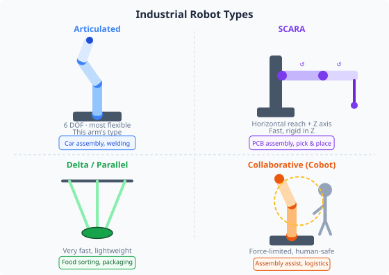
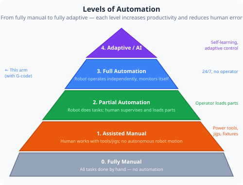

Duration: 2–3 hours · Prerequisites: Modules 1–4

Not all robot arms are the same. Different configurations are suited to different tasks. Understanding the options helps engineers select the right robot for a given application.
Most flexible. Used for welding, assembly, painting. High reach, complex programming. Examples: KUKA KR6, Fanuc M-10.
Fast horizontal movement, rigid vertically. Ideal for pick-and-place, circuit board assembly. Limited to flat workspace.
Very high speed, light payload. Used in food packaging and pharmaceutical sorting. Fixed workspace volume.
Force-limited for safe human contact. Used where humans and robots share a space. Slower but no safety cage needed. Examples: UR5, Franka Emika.

Automation exists on a spectrum. Knowing where a system sits on this spectrum helps set realistic expectations and design appropriate control strategies.
An automation cell groups all the equipment needed for a task: the robot arm, fixtures, conveyors, sensors, safety fencing, and control systems. Good cell design considers:
You will define a simple automation scenario: moving an object from a Pick location to a Place location and returning to Home. This mirrors a real industrial cell.
Define your cell layout on paper first. Mark three positions: Home (safe rest position), Pick (where the object is collected), Place (where it is deposited). Note the approximate joint angles for each.
Open the Stored Positions tab. The app supports up to 100 named positions in slots 0–99. Jog the arm to your Home pose using Pendant Control, then in Stored Positions give it a meaningful name (e.g. "Home") and save it to slot 0.
Repeat for your Pick and Place positions, saving them to slots 1 and 2 with descriptive names ("Pick", "Place"). Using names rather than slot numbers makes the G-code and Blockly programs more readable.
After saving all positions, click Export JSON in the Stored Positions tab to save your position set as a file. This is equivalent to saving a robot program — the JSON file can be imported in a future session to restore all positions instantly.
In Visual Programming, build the sequence: Home → Pick → (pause 1 s) → Place → (pause 1 s) → Home. Add a repeat 5 times loop around the Pick–Place–Home section.
Click Convert to G-Code in the Blockly toolbar. The exported G-code shows exactly the same sequence in text form. Save this file — you now have a portable, re-runnable version of your cell program that does not require the Blockly workspace.
Before running: confirm workspace is clear, torque is enabled, and you are outside the envelope. Run the program and time one full cycle with a stopwatch.
Record the cycle time (Home → Pick → Place → Home). Calculate cycles per minute and cycles per hour — this is the cell's theoretical throughput.
The sequence you programmed in this module is structurally identical to how industrial automation cells are programmed. The difference is scale, speed, and the addition of sensors (conveyors, vision systems, presence detectors) that feed information into the control logic.
Understanding which robot type suits which task is an engineering judgement call with real commercial consequences. Choosing a 6-DOF arm for a job a SCARA would do faster and cheaper is a costly mistake. Choosing a cobot for a heavy welding task is a safety risk. These decisions are made by engineers every day and they require exactly the knowledge covered in this curriculum.
1. A food packaging company needs to place chocolates into boxes at 120 items per minute. Which robot type is most suitable?
2. An operator manually loads parts into a machine that then automatically machines them. What level of automation is this?
3. When designing an automation cell, which of these is the primary reason to consider the robot's reach envelope?